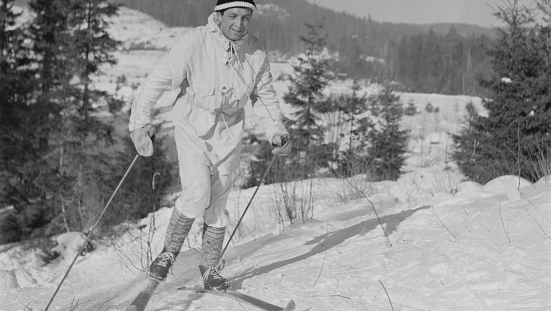
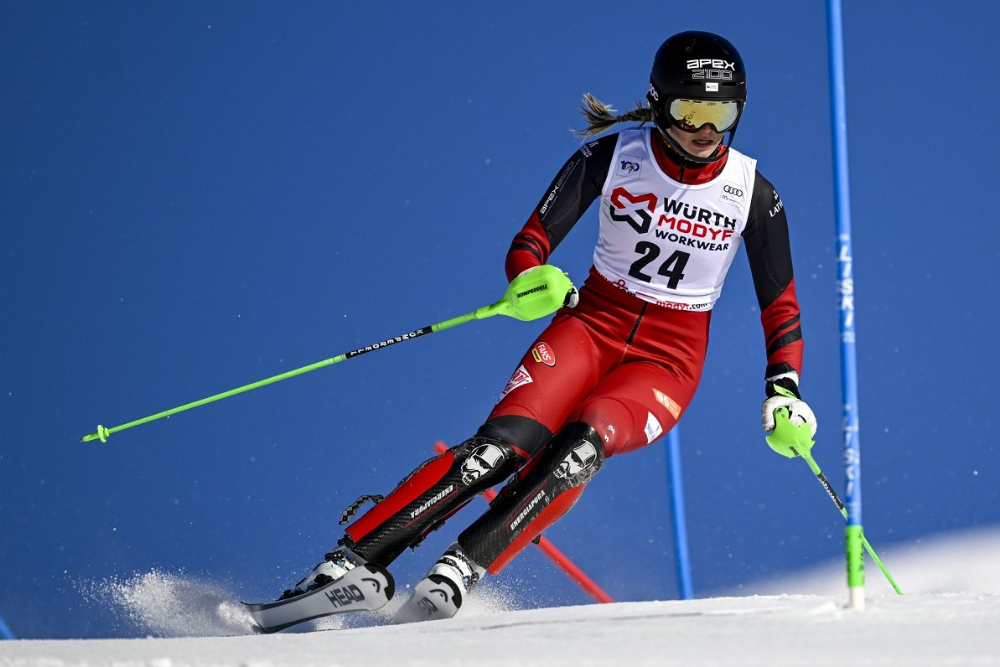

Mājaslapa
Šī mājaslapa ir paredzēta visiem, kuri vēlas iepazīt slēpošanu, gan pilnīgiem iesācējiem, gan tiem, kuri jau ir stāvējuši uz slēpēm, bet vēlas sakārtot zināšanas vai uzzināt ko jaunu.
Mājaslapa piedāvā
- Uzzināt, kas ir slēpošana un kā tā attīstījusies pasaulē un Latvijā.
- Iegūt pamācības par slēpošanas pamatprincipus.
- Noskaidrot, kāds inventārs un apģērbs ir piemērots slēpošanai.
- Atrast slēpošanas vietas Baltijas valstīs.
Slēpošanas vēsture pasaulē
Slēpošana jau attīstijās aptuveni 8000 gadus pirms mūsu ēras Ziemeļķīnā. Sākumā tie bija 2-metrīgi gari dēļi. Laika gaitā viss iesākās ar distanču slēpošanu, pēc tam mēs nonācām pie telemark slēpošanas(Telemark slēpošana ir kad ar distanču slēpēm brauc lejā pa kalnu), un galu galā nonācām pie mūsdienu kalmu slēpošanas. 1952. Gadā kalnu slēpošana tika atzīta un tika pievienota olimpiskajās spēlēs Oslo, Norvēģijā.

Foto: https://www.altitudeskischool.com/verbier/skiing-evolution/
Slēpošanas attīstība Latvijā
Latvijā slēpošana kļuva populāra līdz ar sporta attīstību 20. gadsimtā.Latvijā nav pārāk augsti kalni, bet tāpat, lai arī to virsotnes nebūtu tik augstas, tāpat mums ir iespēja arī slēpot pa saviem kalniem. Ziemās, kad ir pietiekami daudz sniega slēpošana kļūst par iecienītu brīvā laika pavadīšanas veidu, cilvēki nodarbojas gan ar distanču slēpošanu, gan ar kalnu slēpošanu.

Foto: Scanpix/EPA, Pontus Lundahl (Dženifera Ģērmane)